Unit42 - HTB
Overview
Unit42 is a Blue Team Sherlock based on Sysmon logs from a Windows machine infected by a malicious file related to a backdoored UltraVNC campaign. The investigation focuses on identifying the initial malicious process, understanding how the malware was delivered, analyzing files dropped on disk, detecting timestomping activity, and tracing the malware's DNS and network behavior.
The main evidence source was:
Microsoft-Windows-Sysmon-Operational.evtxThe EVTX file was parsed into CSV format and analyzed using Timeline Explorer.
Tools Used
- EvtxECmd
- Timeline Explorer
- PowerShell
- Sysmon logs
Useful Sysmon Event IDs
| Event ID | Meaning |
|---|---|
| 1 | Process Creation |
| 2 | File creation time changed |
| 3 | Network Connection |
| 5 | Process Terminated |
| 11 | File Created |
| 15 | FileCreateStreamHash / Zone.Identifier |
| 22 | DNS Query |
| 23 | File Deleted |
Task 1 - Event ID 11 Count
Question: How many Event ID 11 logs are there?
Approach: I filtered the parsed Sysmon logs in Timeline Explorer using:
Event ID = 11Sysmon Event ID 11 represents file creation events. After applying the filter, Timeline Explorer showed 56 visible rows.
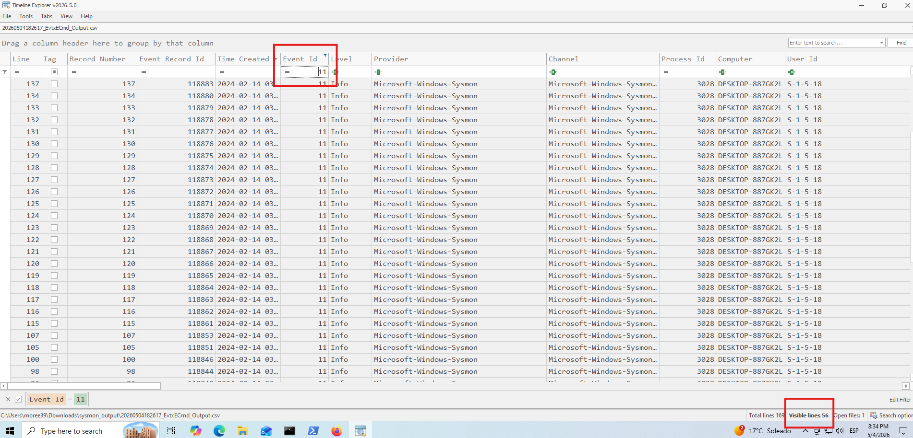
Answer:
56Task 2 - Malicious Process
Question: Whenever a process is created in memory, an event with Event ID 1 is recorded with details such as command line, hashes, process path, parent process path, etc. What is the malicious process that infected the victim's system?
Approach: I filtered for Sysmon Event ID 1:
Event ID = 1Event ID 1 records process creation events, including the executed process, command line, parent process, hashes, and execution path.
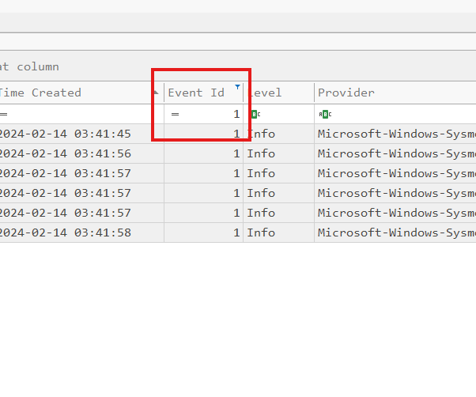
I looked for suspicious indicators such as:
- Execution from the user's Downloads folder
- A suspicious filename
- A double extension
- A parent process of
explorer.exe, indicating user execution
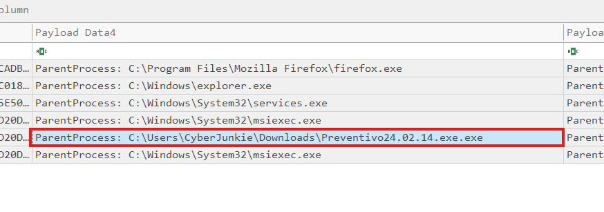
The suspicious process was:
C:\Users\CyberJunkie\Downloads\Preventivo24.02.14.exe.exeAnswer:
C:\Users\CyberJunkie\Downloads\Preventivo24.02.14.exe.exeTask 3 - Cloud Drive Used
Question: Which cloud drive was used to distribute the malware?
Approach: To identify the cloud service used to distribute the malware, I searched the parsed Sysmon CSV files for common cloud storage keywords using PowerShell:
Select-String -Path C:\Users\moree39\Downloads\sysmon_output\*.csv -Pattern "drive","dropbox","mega","onedrive","mediafire","pcloud","wetransfer","yandex","box"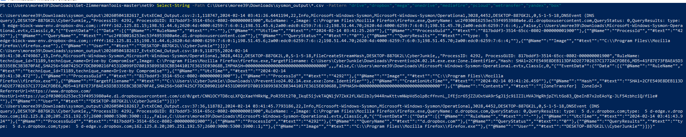
The results showed several Dropbox-related domains:
dropboxusercontent.com
d.dropbox.com
https://www.dropbox.com/The strongest evidence came from the Zone.Identifier metadata attached to the downloaded malicious file:
TargetFilename: C:\Users\CyberJunkie\Downloads\Preventivo24.02.14.exe.exe:Zone.IdentifierInside that entry, the source URLs were visible:
ReferrerUrl=https://www.dropbox.com/
HostUrl=https://uc2f030016253ec53f4953980a4e.dl.dropboxusercontent.com/This confirmed that the malware was downloaded from Dropbox.
Answer:
DropboxTask 4 - PDF Timestamp
Question: What timestamp was the PDF file changed to?
The hint mentioned Time Stomping, so I searched for PDF-related activity in Timeline Explorer using:
.pdf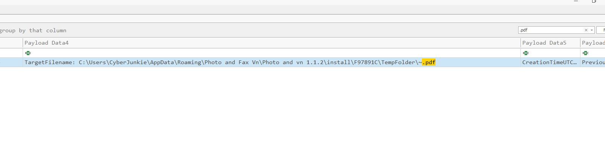
Then I focused on Sysmon Event ID 2:
Event ID = 2Event ID 2 records when a file creation timestamp is changed.
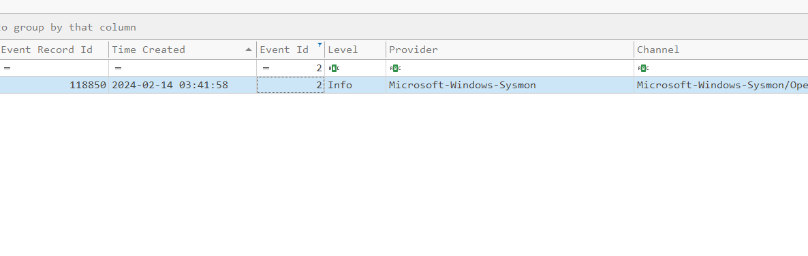
The relevant event showed:
TargetFilename: C:\Users\CyberJunkie\AppData\Roaming\Photo and Fax Vn\Photo and vn 1.1.2\install\F97891C\TempFolder\~.pdf
CreationTimeUTC: 2024-01-14 08:10:06.029
PreviousCreationTimeUTC: 2024-02-14 03:41:58.404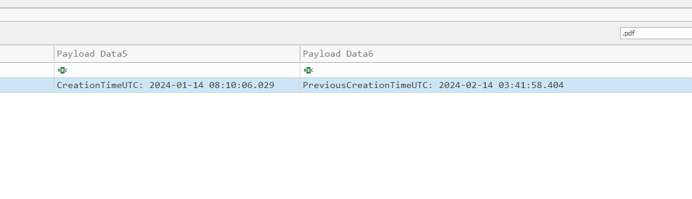
PreviousCreationTimeUTC was the original timestamp, while CreationTimeUTC was the
fake timestamp set by the malware.
Answer:
2024-01-14 08:10:06Task 5 - once.cmd Location
Question: Where was once.cmd created on disk?
I searched for:
once.cmd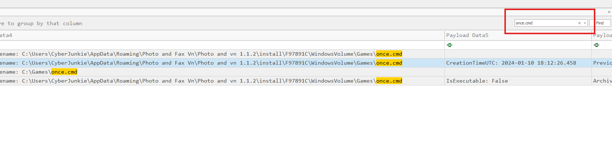
once.cmd reveals the relevant file creation activity.Then I filtered for Sysmon Event ID 11:
Event ID = 11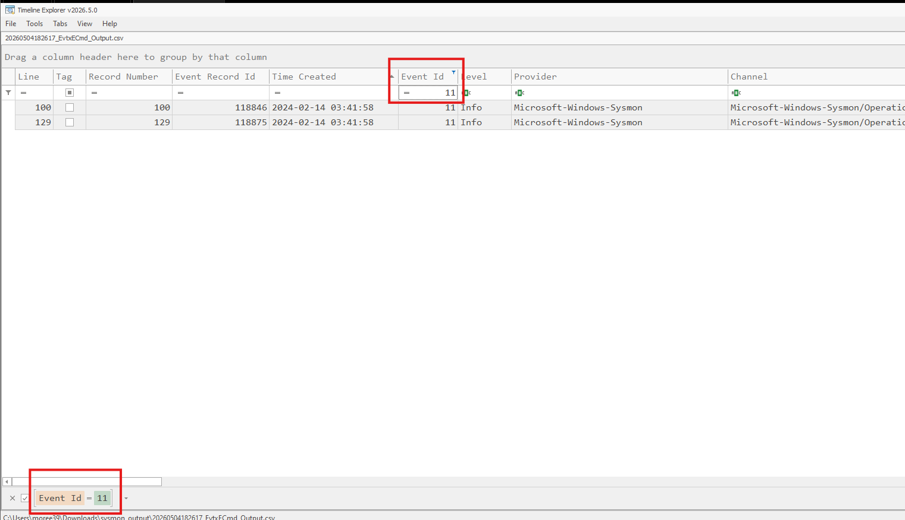
once.cmd.Two relevant results appeared:
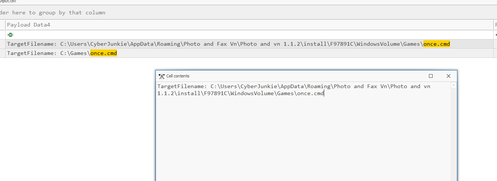
First event:
Image: C:\Users\CyberJunkie\Downloads\Preventivo24.02.14.exe.exe
TargetFilename: C:\Users\CyberJunkie\AppData\Roaming\Photo and Fax Vn\Photo and vn 1.1.2\install\F97891C\WindowsVolume\Games\once.cmd
CreationUtcTime: 2024-02-14 03:41:58.404Second event:
Image: C:\Windows\system32\msiexec.exe
TargetFilename: C:\Games\once.cmd
CreationUtcTime: 2024-02-14 03:41:58.577
The first event happened earlier and was created directly by the malicious executable. Therefore, this was
the original location where once.cmd was created on disk.
Answer:
C:\Users\CyberJunkie\AppData\Roaming\Photo and Fax Vn\Photo and vn 1.1.2\install\F97891C\WindowsVolume\Games\once.cmdTask 6 - Dummy Domain
Question: What dummy domain did the malicious file try to connect to?
I filtered for DNS queries using Sysmon Event ID 22:
Event ID = 22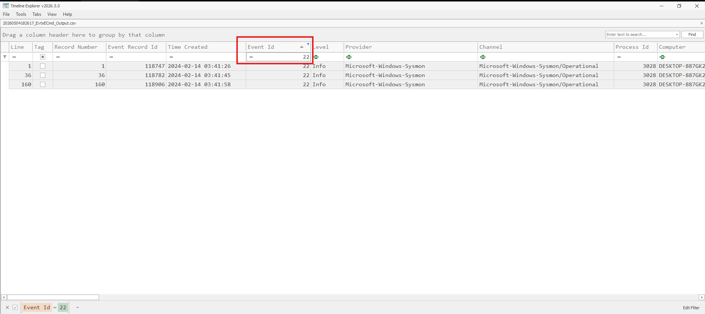
Then I compared the queried domains with the process responsible for each query.
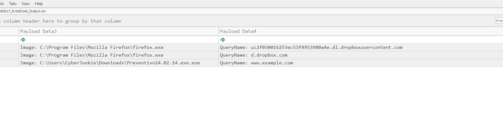
www.example.com directly.The Dropbox-related domains were queried by Firefox, which matched the malware download activity:
Image: C:\Program Files\Mozilla Firefox\firefox.exe
QueryName: d.dropbox.comThe malicious process itself queried:
Image: C:\Users\CyberJunkie\Downloads\Preventivo24.02.14.exe.exe
QueryName: www.example.comSince www.example.com was queried directly by the malware, it was most likely used as a connectivity check.
Answer:
www.example.comTask 7 - Destination IP
Question: Which IP address did the malicious process try to reach out to?
To find the actual outbound connection, I filtered for Sysmon Event ID 3:
Event ID = 3Event ID 3 records network connections.
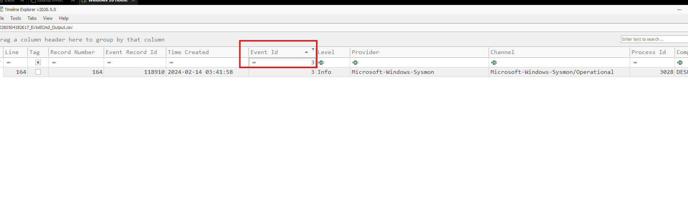
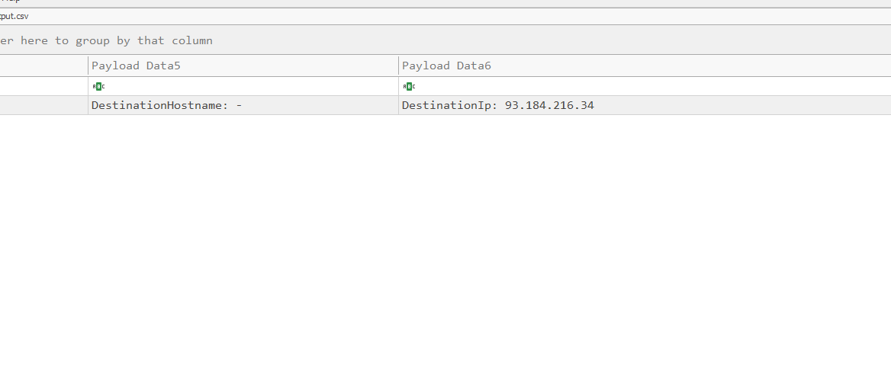
www.example.com.There was one relevant network connection event. Inside the event details, the destination IP was:
DestinationIp: 93.184.216.34Answer:
93.184.216.34Task 8 - Process Termination
Question: When did the malicious process terminate itself?
I filtered for Sysmon Event ID 5:
Event ID = 5Event ID 5 records process termination events.
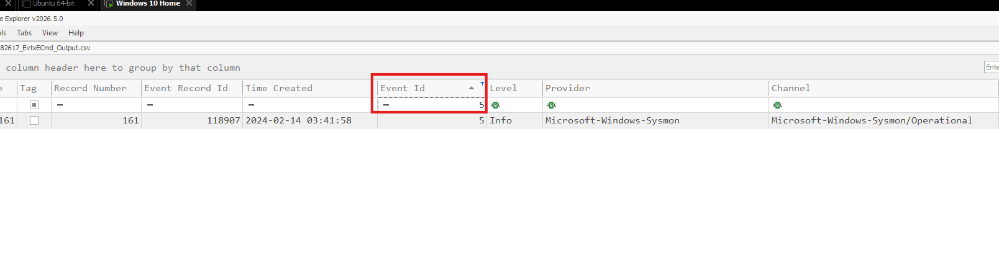
The relevant event was associated with the malicious executable:
Image: C:\Users\CyberJunkie\Downloads\Preventivo24.02.14.exe.exe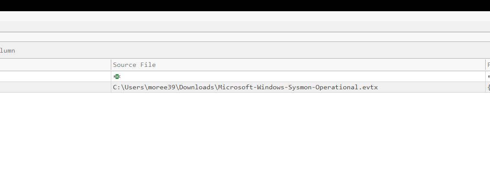
The event payload showed:
UtcTime: 2024-02-14 03:41:58.795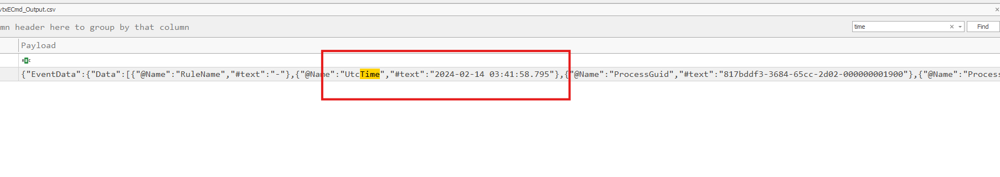
Answer:
2024-02-14 03:41:58Conclusion
This investigation reconstructed the initial infection chain using only Sysmon logs. The malicious file was
downloaded from Dropbox, executed from the user's Downloads folder, created several files on disk, performed
timestomping to hide artifacts, checked internet connectivity using www.example.com, connected
to 93.184.216.34, and then terminated itself after completing the infection process.
The key evidence came from correlating different Sysmon event types: process creation, file creation, DNS queries, network connections, timestamp modification, and process termination.
Back to Writeups